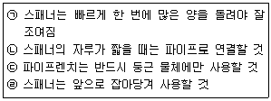

천장크레인운전기능사 (2005-10-02 기출문제)
1과목: 임의 구분
1. 천장크레인 거더(girder)에 대한 설명 중 가장 올바른 것은?
- 정격하중 부하 시 거더의 캠버(camber)는 스팬의 1/800을 초과하지 않는 것이 좋다.
- 스팬이 20m 미만이고 하중이 적은 것은 캠버를 붙이지 않아도 된다.
- 거더의 아래로 처지는 휨은 부하 시 1/1200을 초과하면 안 된다.
- 천장크레인의 거더의 캠버는 보통 스팬의 1/500 1/1800이 양호하다.
(정답률: 72%)

2. 횡행장치에서 전원 공급방식으로 사용하지 않는 것은?
- 케이블 캐리어
- 페스툰 방식
- 트롤리 와이어 방식
- 케이블 릴 방식
(정답률: 48%)
3. 다음 키 중 전달하는 회전력이 제일 큰 키는?
- 접선 키
- 안장 키
- 둥근 키
- 납작 키
(정답률: 36%)
4. 기어와 축과의 관계를 연결한 것 중 틀린 것은?
- 두 축의 교차 - 베벨 기어
- 두 축의 평행 - 스퍼 기어
- 두 축이 평행도, 교차도, 하지 않는 기어 - 웜과 웜기어
- 두 축이 교차 - 하이포이드 기어
(정답률: 24%)
5. 60Hz 4극인 유도전동기 슬립이 4%일 때 회전수(rpm)는?
- 1410
- 1728
- 1872
- 1800
(정답률: 48%)
6. 다음 중 주행 제동용으로 주로 사용되는 브레이크는?
- 마그네틱 브레이크
- 에디 커런트 브레이크
- 오일 디스크 브레이크
- 스피드 컨트롤 브레이크
(정답률: 42%)
7. 천장크레인 전동기(motor)에 대한 설명으로 틀린 것은?
- 전동기 운전 시 온도는 90℃ 까지 허용된다.
- 전동기 형상에서 개방형, 전폐형 등이 있다.
- 전동기의 분류는 크게 직류전동기와 교류전동기로 분류할 수 있다.
- 전동기 평판에 220V, 100A 정격 1시간 이라는 것은 200V, 100A 조건에서 1시간 연속사용 가능하다는 것이다.
(정답률: 57%)
8. 기중기 배선 중 알맞은 것은?
- R.S.T.A
- R.S.T.E
- R.E.S.T
- T.S.A.E
(정답률: 72%)
9. 제어기에 인터록을 설치하는 목적은?
- 전원을 잘 공급하기 위하여
- 전자접촉의 안전을 위하여
- 전기스파크를 방지하기 위하여
- 전자접속 용량조정을 위하여
(정답률: 40%)
10. 브레이크 중에서 전기를 투입하여 유압으로 작동되는 것은?
- 오일디스크 브레이크
- 마그넷 브레이크
- 스러스트 브레이크
- 다이나믹 브레이크
(정답률: 56%)
11. 중추식 리밋 스위치(weight type L/S)는 다음 중 어느 경우에 사용되는가?
- 훅의 과상승 방지
- 훅의 과하강 방지
- 훅의 과주행 방지
- 훅의 과부하 방지
(정답률: 16%)
12. 다음 브레이크(break) 중에서 권상장치의 제동용으로 적합하지 않는 것은?
- 메카니칼 브레이크
- 압상기 브레이크
- 직류전자 브레이크
- 교류전자 브레이크
(정답률: 43%)
13. 천장크레인의 모터(motor)용 부품 중에서 예비품으로 반드시 준비해 둘 필요가 있는 것은?
- 브러시와 홀더
- 회전자
- 고정자
- 터미널 단자
(정답률: 71%)
14. 2의 궤도를 사이에 있는 전동체가 굴림 운동을 하며 볼, 원통, 테이퍼 롤러 등의 종류로 분류할 수 있는 것은?
- 스러스트 베어링
- 정접촉 베어링
- 구름 베어링
- 미끄럼 베어링
(정답률: 34%)
15. 브레이크 스프링을 표준치 이상으로 너무 많이 압축하면 어떤 현상이 일어나는가?
- 브레이크 제동력이 높고 전자석의 흡입력도 좋다.
- 브레이크 제동력은 나쁘나 전자석의 흡입력은 좋다.
- 전자석의 흡입력이 부족하여 과부하로 코일이 소손 된다.
- 전자석의 흡입력이 부족하여 부하는 걸리나 코일 소손은 안 된다.
(정답률: 71%)
16. 구름 베어링에 있어서 일반적으로 온도가 섭씨 몇 도 이상 올라가면 이상이 있다고 보는가?
- 40
- 70
- 100
- 200
(정답률: 57%)
17. 천장크레인 점검 보수작업 중 감전사고가 발생하였다. 조치 방법으로 틀린 것은?
- 즉시 전원을 차단한다.
- 즉시 피해자를 잡아 당겨 접촉으로부터 분리시킨다.
- 감전되어 인사불성에 빠지더라도 전원 차단 후 인공호흡을 실시한다.
- 전원을 차단하기 어려운 경우에는 마른 헝겊이나 플라스틱 등 절연물을 이용하여 접촉물을 제거한다.
(정답률: 69%)
18. 다음 중 헬리컬 기어의 윤활유는 작업시간 얼마 경과 후 윤활유를 교환하여야 하는가?
- 1000시간
- 1500시간
- 2000시간
- 2500시간
(정답률: 74%)
19. 윤활유가 유입되거나 부착되어서는 안 되는 것은?
- 와이어로프 및 드럼
- 브레이크 라이닝 및 드럼
- 체인 및 스프라켓
- 베어링 및 하우징
(정답률: 62%)
20. 전기의 스파크가 많은 경우로 옳지 않은 것은?
- 전로(電路)를 닫을 때보다 열 때가 많다.
- 접촉점을 흐르는 전류가 많을수록 많다.
- 접촉점간의 전압이 낮을수록 많다.
- 접촉면의 요철이 심할수록 자주 일어난다.
(정답률: 75%)
2과목: 임의 구분
21. 브레이크 라이닝의 사용 한도는 원 두께의 약 몇 %이하일 때 새 라이닝으로 교체하는 것이 가장 좋은가?
- 70%
- 20%
- 30%
- 50%
(정답률: 69%)
22. 권선형 유도 전동기의 속도조정 목적으로 사용되는 것은?
- 슬립링
- 회전자
- 고정자
- 2차 저항기
(정답률: 88%)
23. 드러스트(유압) 브레이크용 오일의 사용시간은 약 얼마인가?
- 1000h
- 2000h
- 3000h
- 4000h
(정답률: 85%)
24. 감속기 오일은 점도검사를 하여 교환하지만 일반적으로 몇 시간 사용 후 교환하는가?
- 1000
- 2000
- 3000
- 4000
(정답률: 83%)
25. 매다는 체인에서 점검해야 할 사항과 거리가 먼 것은?
- 마모
- 변형
- 윤활
- 휠터
(정답률: 65%)
26. 시브 및 와이어 드럼 홈의 지름은 와이어로프 공칭 지름보다 얼마나 크게 하는 것이 가장 적당한가?
- 10%
- 20%
- 25%
- 30%
(정답률: 34%)
27. 훅(Hook)의 마모는 와이어로프가 걸리는 곳에 흠이 생기는 것인데 마모의 깊이가 몇 ㎜가 되면 편편하게 다듬질해야 하는가?
- 0.5㎜
- 2㎜
- 5㎜
- 8㎜
(정답률: 67%)
28. 운전자의 일상 점검 사항이 아닌 것은?
- 컨트롤러의 작동상태 확인
- 각 브레이크 및 리미트 스위치 확인
- 브레이크 라이닝의 마모상태 확인
- 좌우 레일의 높고 낮음의 차이 확인
(정답률: 84%)
29. 로프의 밀림 현상이 일어나는 경우를 나타낸 것이다. 이중 옳지 않은 것은?
- 휠차가 원활히 회전하지 않을 경우
- 권상통에 중첩되어 감겼을 경우
- 로프가 활차와 잘 구성되어 있을 경우
- 로프가 활차 플랜지에 접촉되어 있을 경우
(정답률: 65%)
30. 와이어로프에서 소선을 꼬아 합친 것은?
- 심강
- 트래드
- 공심
- 스트랜드
(정답률: 50%)
31. 슬링 와이어로프의 가장 이상적인 매다는 각도는?
- 30
- 60
- 90
- 120
(정답률: 16%)
32. 와이어로프 단말 체결법 중에서 체결 효율이 가장 높은 것은?
- 아이 스플라이스(eye splice)법
- 클립 체결법
- 쐐기(wedge)법
- 소켓(socket)법
(정답률: 30%)
33. 크레인에 관계있는 산업규격에서 로프의 1줄 길이는 몇 m를 표준으로 하는가?
- 50
- 100
- 150
- 200
(정답률: 32%)
34. 무거운 기계와 전동기 등을 들어 올릴 때 체인 또는 훅 등을 거는데 사용하는 볼트는?
- 스테이 볼트
- 아이 볼트
- 리머 볼트
- 충격 볼트
(정답률: 64%)
35. 크레인에 사용되는 와이어로프의 검사항목에 해당되지 않는 것은?
- 마모상태 검사
- 엉킴 및 꼬임 킹크 상태 검사
- 끝단처리(단말고정) 상태 검사
- 소선의 인장강도 검사
(정답률: 61%)
36. 체적이 같을 때 무거운 것부터 차례로 기술한 것으로 맞는 것은?
- 납-점토-철-동
- 납-동-점토-철
- 철-동-납-점토
- 납-동-철-점토
(정답률: 75%)
37. 와이어로프의 심강을 3가지 종류로 구분한 것은?
- 섬유심, 공심, 와이어심
- 철심, 동심, 아연심
- 섬유심, 랭심, 동심
- 와이어심, 아연심, 랭심
(정답률: 75%)
38. 크레인으로 중량물을 인양하기 위해 줄걸이 작업을 할 때의 주의 사항이 아닌 것은?
- 중량물의 중심위치를 고려한다.
- 줄걸이 각도를 최대한 크게 해준다.
- 줄걸이 와이어로프가 미끄러지지 않도록 한다.
- 날카로운 모서리가 있는 중량물은 보호대를 사용한다.
(정답률: 78%)
39. 천장크레인 주행에 대한 설명으로 적합하지 않은 것은?
- 급격한 주행을 하지 말 것
- 주행과동시운반물을 권상, 권하시키지 말 것
- 운반물 뒤에 사람이 타고 있을 때는 주행을 서서히 할 것
- 주행로 상에 장애물이 있을 때는 주행을 멈출 것
(정답률: 72%)
40. 크레인 작업의 위험성이 아닌 것은?
- 줄걸이 작업방법 불량에 의한 화물의 낙하
- 감속기 오일 등의 폭발로 인한 화재
- 줄걸이용 와이어로프가 훅에서 이탈되어 추락
- 크레인과 벽체와의 안전통로 미확보로 인한 협착
(정답률: 76%)
3과목: 임의 구분
41. 크레인 작업은 초당 풍속이 몇 미터의 속도에서 작업을 중지하여야 하는가?
- 40
- 30
- 20
- 10
(정답률: 13%)
42. 천장크레인 운전요령 중 메인(main)스위치를 투입했는데도 운전실의 신호램프가 들어오지 않을 때 가장 옳은 처리 방법은?
- 먼저 정비사에게 연락한다.
- 제어기의 전압이"0" 상태인가 확인한다.
- 상사에게 보고한다.
- 모터에서부터 점검한다.
(정답률: 89%)
43. 줄걸이 용구의 안전계수를 나타낸 공식은?
- 안전계수 = 절단하중 / 안전하중
- 안전계수 = 허용응력 / 극한강도
- 안전계수 = 극한강도 / 절단하중
- 안전계수 = 허용응력 / 절단하중
(정답률: 68%)
44. 천장크레인으로서 하중을 운반할 때 주의할 점에 대한 설명 중 가장 옳은 것은?
- 규정된 하중 이상은 매달지 않는 것이 원칙이나 전에 매달아서 사고가 없었던 하중이면 매달아도 무방하다.
- 보조 와이어로프는 와이어 작업자가 선정하는 것이 좋다.
- 와이어로프는 훅의 중심에 걸고 매다는 각도는 되도록 작게 하는 것이 좋다.
- 신호수에게만 의존하여 운전하며, 운반물을 지상에서 높이 달아 출발하는 것이 좋다.
(정답률: 50%)
45. 마그넷 크레인(magnet crane)에 있어서 최소 정전보증 시간은?
- 10분 이상
- 20분 이상
- 40분 이상
- 50분 이상
(정답률: 70%)
46. 운동 중 과행을 방지하기 위한 보호 장치는?
- 전자 접촉기
- 리미트 스위치
- 오버로드 스위치
- 퓨즈
(정답률: 90%)
47. 거더의 중앙부에 정격하중을 매달았을 경우의 허용 굽힘은?
- 스팬(span)의 1/500을 초과하지 않을 것
- 스팬의 1/800을 초과하지 않을 것
- 스팬의 1/1200을 초과하지 않을 것
- 스팬의 1/1500을 초과하지 않을 것
(정답률: 77%)
48. 운전자가 가장 올바르게 권상작업을 한 것은?
- 훅은 화물 중앙에 정확히 맞추고 주행과 권상을 동시 작동한다.
- 줄걸이 와이어가 완전히 힘을 받아 팽팽해지면 일단 정지한다.
- 횡행 작동은 흔들림 위험이 없으므로 항상 최고속도로 운전한다.
- 훅을 화물의 중앙 위치에 맞추었으면 바로 권상을 하여 2m 이상 높이에서 멈춘다.
(정답률: 62%)
49. 크레인 작업종료시의 주의사항으로 틀린 것은?
- 크레인은 작업을 종료한 위치에 정지시켜둔다.
- 주배선용 차단기는 내려놓는다.
- 전용의 줄걸이 작업 용구를 사용하고 있는 경우는 조정을 소정의 위치에 내려놓는다.
- 훅 블록은 작업자나 차량의 통행에 지장을 주지 않는 높이까지 권상시켜 둔다.
(정답률: 77%)
50. 주행, 횡행, 권상 중 일상점검 운전은 어떤 하중으로 실시해야 하는가?
- 무부하
- 정격 하중
- 정격 하중의
- 시험 하중
(정답률: 65%)
51. 기중기로 물건을 운반 시 주의할 사항으로 잘못된 것은?
- 적재물이 떨어지지 않도록 한다.
- 규정 무게보다 약간 초과할 수도 있다.
- 로프 등의 안전여부를 항상 점검한다.
- 운반 중 사람이 다치지 않도록 한다.
(정답률: 84%)
52. 일반 수공구 사용 시 주의 사항으로 틀린 것은?
- 용도 이외에는 사용하지 않는다.
- 사용 후에는 정해진 장소에 보관한다.
- 수공구는 손에 꼭 잡고 떨어지지 않게 작업한다.
- 볼트 및 너트의 조임에 파이프렌치를 사용한다.
(정답률: 95%)
53. 안전작업 사항으로 잘못된 것은?
- 전기장치는 접지를 하고, 이동식 전기기구는 방호장치를 한다.
- 엔진에서 배출되는 일산화탄소에 대비한 통풍 장치를 설치한다.
- 담뱃불은 발화력이 약하므로 어느 곳에서나 흡연해도 무방하다.
- 주요 장비 등은 조작자를 지정하여 누구나 조작하지 않도록 한다.
(정답률: 81%)
54. 인화성이 가장 큰 물질은?
- 산소
- 질소
- 황산
- 알콜
(정답률: 69%)
55. 작업장에서 방진마스크를 착용해야 할 경우는?
- 소음이 심한 작업장
- 분진이 많은 작업장
- 온도가 낮은 작업장
- 산소가 결핍되기 쉬운 작업장
(정답률: 92%)
56. 다음 중 드릴머신으로 구멍을 뚫을 때 일감 자체가 가장 회전하기 쉬운 때는 어느 때 인가?
- 구멍을 처음 뚫기 시작할 때
- 구멍을 중간 쯤 뚫었을 때
- 처음과 끝 구멍을 뚫었을 때
- 구멍을 거의 뚫었을 때
(정답률: 53%)
57. 연료 취급에 대하여 가장 거리가 먼 것은?
- 연료 주입은 운전 중에 하는 것이 효과적이다.
- 연료 주입 시 물이나 먼지 등의 불순물이 혼합되지 않도록 주의한다.
- 정기적으로 드레인콕을 얻어 연료 탱크내의 수분을 제거한다.
- 연료를 취급할 때에는 화기에 주의한다.
(정답률: 89%)
58. 다음은 렌치작업에 있어서 주의 점을 나열한 것이다. 옳은 것은?

- ㉠㉡㉢
- ㉠㉢㉣
- ㉡㉢
- ㉢㉣
(정답률: 48%)
59. 전기 기구를 취급하여 작업할 때 틀린 사항은?
- 스위치를 넣거나 끊는 것은 오른손으로 정확히 한다.
- 퓨즈가 끊어졌다고 함부로 손을 대서는 안 된다.
- 보호 덮개를 씌우지 않은 백열전등으로 된 작업 등을 사용한다.
- 신호 점검사항을 확인하고 스위치를 넣는다.
(정답률: 72%)
60. 작업환경 개선에 가장 거리가 먼 것은?
- 채광을 좋게 한다.
- 조명을 밝게 한다.
- 부품을 교환한다.
- 소음을 줄인다.
(정답률: 59%)